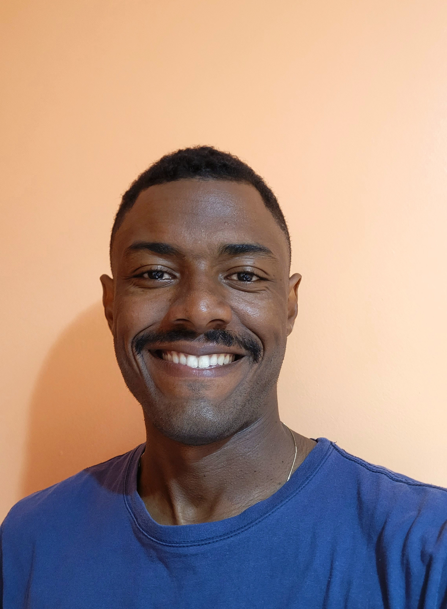

Gilberto Neto
Um entusiasta tech, graduando em Engenharia de Software. Combino uma sólida base acadêmica com vivência prática no desenvolvimento de sistemas e suporte tecnológico. Minha trajetória é voltada para a construção de soluções eficientes, com foco em desenvolvimento de sistemas, estruturação de microsserviços, segurança da informação, modelagem de dados e metodologias ágeis. Além disso, possuo conhecimentos complementares em estruturação de páginas web e interfaces.